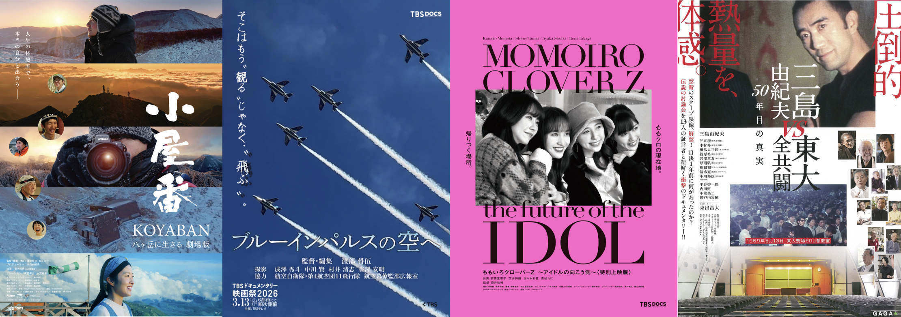
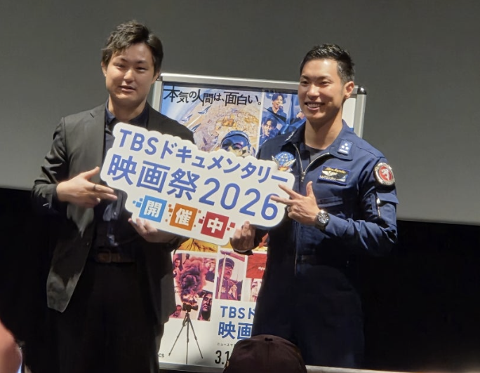

2021
TBSグループ社員のみなさまへ
『TBSドキュメンタリー映画祭2027』上映作品の企画を募集します。
あなたの企画が、
ドキュメンタリー映画になる。
エントリー締切
2026年09月30日（水）

「TBSドキュメンタリー映画祭」とは
会社の枠を超えた
挑戦の場

TBSグループとJNN系列局の社員が企画制作したドキュメンタリー映画を、全国6都市の映画館で上映する映画祭。2021年から始まり、2026年に第6回を終えた。初回1,000人に満たなかった動員数が、2026年は約15,000人を動員。
ドキュメンタリー映画は、ピュアで、社会課題を解決する力を持ち、ルールや制約の少ない比較的自由な表現です。「制約の多い現代」において、真実を愚直に追ったり、カッコ良いことを仕掛けたり、会社の枠組みを超えたチャレンジの場とすることができます。
TBSグループ社員のみなさま、ぜひご応募くださいませ。
報道コンテンツ戦略室 室長 高山暢比古
受賞実績
国内外で多くの賞を受賞
TBSグループと監督をブランディング
2023
『人生クライマー 山野井泰史と垂直の世界 完全版』（武石浩明 監督）
蔚山蔚州山岳映画祭（韓国）NETPAC賞2024
『サステナ・フォレスト～森の国の守り人たち～』（川上敬二郎 監督）
Media is Hope AWARD 2024上半期 個人賞2026
『カラフルダイヤモンド〜君と僕のドリーム2〜』（津村有紀 監督）
ロンドン・フィルムメーカー国際映画祭 最優秀ドキュメンタリー賞と外国語映画・最優秀監督賞募集要項
| 応募資格 | TBSグループ各社に所属する社員 |
|---|---|
| 応募可能な 映画企画 |
・ドキュメンタリー作品であること ・ジャンルは問いません（ニュース・スポーツ・自然・エンタメ など） ・上映や配信にあたり、著作権処理に問題がないこと |
| 応募締切 | 2026年9月30日（水）まで※今年の締切に間に合わない企画もご相談ください。 |
| 応募後の流れ | 2026年10月：エントリーされた方々へのご連絡※制作に進める作品はこの時点でお伝えします。2026年12月下旬：映画祭上映作品の完パケ納品 2027年3-4月：TBSドキュメンタリー映画祭及び主要都市での上映 |
| お問合せ先 | 報道コンテンツ戦略室 高山暢比古 takayama.nobuhiko@tbs.co.jp 川上敬二郎 kawakami.keijiro@tbs.co.jp |
「番組で取材した、〇〇をドキュメンタリー映画にしたい」
「〇〇さんの取材と出演を、口説けそう」
「◯◯について、国内外の多くの人に知ってほしい」